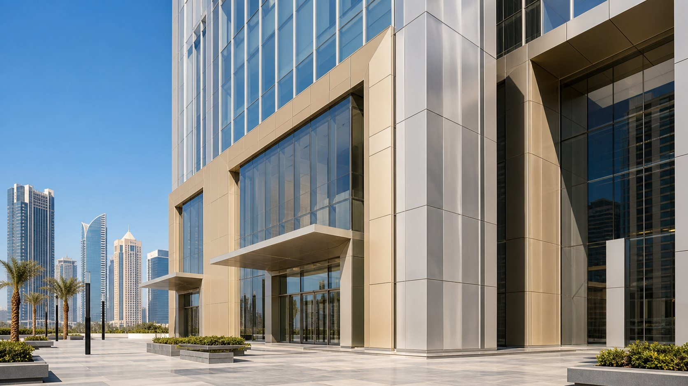

One of the first questions in an aluminum facade inquiry is: Should the panel be 2.0 mm, 2.5 mm or 3.0 mm thick? The simple answer is that thicker panels are generally stiffer, but the correct specification also depends on panel size, wind pressure, fixing points, return depth, stiffener layout, alloy temper and architectural shape.
Choosing the lowest thickness without checking the complete cassette design can lead to visible waviness, vibration or excessive deflection. Specifying the thickest sheet everywhere can add unnecessary cost and weight. The best result comes from matching the panel construction to each facade zone.

Typical Thickness Options at a Glance
| Thickness | Typical applications | Main advantage | Points to check |
|---|---|---|---|
| 2.0 mm | Interior walls, ceilings, soffits, low-rise or small facade modules | Lower weight and material cost | Module size, stiffeners, dent resistance and local wind pressure |
| 2.5 mm | Standard commercial facades, canopies and medium-size cassettes | Balanced stiffness, weight and cost | Support spacing, return depth, coating and visual tolerance |
| 3.0 mm | Exterior curtain walls, larger modules, exposed elevations and premium projects | Higher stiffness and fabrication stability | Total system weight, structural calculation and budget |
| 4.0 mm | Special large-format, impact-prone or heavy-duty applications | Extra rigidity and robustness | Whether stiffeners or a honeycomb panel would be more efficient |
These are practical starting points, not universal design rules. Building codes, consultant requirements and structural calculations take priority over general market practice.
When Does 2.0 mm Make Sense?
A 2.0 mm solid aluminum panel can be a good choice where modules are relatively small and loads are moderate. It is commonly considered for interior wall cladding, ceilings, fascia, sheltered soffits and some low-rise elevations.
Because the sheet is lighter and easier to form, 2.0 mm can reduce material cost. The trade-off is lower resistance to bending and handling damage. Large unreinforced panels may show more oil canning, and thin returns can be less forgiving during transport and installation.
Before accepting a 2.0 mm proposal for an exterior facade, check:
- The maximum width and length of each panel module
- The design wind pressure for the exact facade zone
- The number, spacing and attachment method of rear stiffeners
- The cassette return depth and corner construction
- Handling, packaging and replacement requirements
Why 2.5 mm Is Often the Balanced Option
For many standard commercial projects, 2.5 mm sits between the economy of 2.0 mm and the added rigidity of 3.0 mm. It can provide better stiffness and handling resistance without a large increase in weight.
This thickness is often suitable for regular facade modules, entrance canopies, parapets and column covers when the cassette geometry and reinforcement are properly designed. It is also useful when a project needs a more robust panel than 2.0 mm but does not require 3.0 mm throughout every elevation.
A zone-based specification can be economical: 3.0 mm for larger or highly exposed modules, and 2.5 mm for smaller or more sheltered areas. The drawings and panel schedule should identify those zones clearly so that thicknesses are not mixed accidentally during fabrication.
When 3.0 mm Is the Better Starting Point
Three-millimeter solid aluminum is widely specified for exterior curtain wall cassettes because it gives the fabricator more stiffness and stability to work with. It is especially relevant for high-rise buildings, larger modules, corner zones with higher pressure, perforated panels with reduced net section, and surfaces where visual flatness is important.
A thicker sheet can also improve resistance to local dents during fabrication and installation. However, 3.0 mm does not eliminate the need for good engineering. A large panel can still deflect if the returns are shallow, fixing points are too far apart or stiffeners are poorly bonded.
Six Factors That Determine the Correct Thickness
1. Panel width and length
As panel dimensions increase, unsupported sheet area increases quickly. A larger module normally needs more thickness, deeper returns, closer supports, additional stiffeners or a different panel construction. For very large flat modules, an aluminum honeycomb panel may provide better stiffness-to-weight performance.
2. Wind pressure and building zone
Wind pressure is not uniform across a building. Corners, roof edges and upper levels may experience higher suction or pressure than central lower elevations. The panel schedule should match calculated loads by zone rather than applying one assumption to the entire building.
3. Alloy and temper
Thickness alone does not define strength. Alloy and temper affect forming behavior, yield strength and surface stability. Common architectural selections include 3003 series material for formability and 5005 or 5052 series material where project requirements call for different strength or finish characteristics. Confirm the required grade on the purchase order and material certificate.
4. Cassette geometry and stiffeners
Bent returns, welded corners, stiffener profiles and fixing brackets turn a flat sheet into a structural cassette. Two panels made from the same 3.0 mm sheet can behave very differently if their return depth and reinforcement layout are different.
5. Perforation, carving and curvature
Perforation removes material and changes stiffness. The hole size, pitch, open area and border width all matter. Deep carving or large cutouts can have a similar effect. Curved panels may gain geometric stiffness in one direction but still require checks around joints and attachments. See our perforated aluminum panel guide for specification details.
6. Flatness and visual expectations
Architectural acceptance is often visual as well as structural. Gloss level, color, sunlight angle and long sight lines can make minor waviness more noticeable. Low-gloss finishes and smaller modules can reduce the visual effect, while careful fabrication, reinforcement and installation control are essential for premium elevations.
Thickness Is Not the Same as Coating Thickness
Panel thickness refers to the aluminum substrate. Coating thickness is a separate finish specification measured on the surface. A request such as “3.0 mm PVDF aluminum panel” should define both the 3.0 mm base sheet and the coating system.
For exterior projects, specify the coating type, approved color, gloss range, number of coats where required and applicable performance standard. Our PVDF vs powder coating guide explains how environment and service life affect finish selection.
Common Specification Mistakes
- Choosing thickness from price alone: a lower sheet cost may be offset by more stiffeners, installation issues or rejected panels.
- Ignoring maximum module size: a thickness can work well for one panel size and poorly for another.
- Using one thickness for every zone: exposed corners and sheltered areas may need different designs.
- Comparing quotations without alloy details: suppliers may quote different alloys, tempers, tolerances or coating systems.
- Approving only a small color chip: a full-size mock-up reveals flatness, joint width, gloss and daylight appearance.
- Treating stiffeners as an afterthought: their profile, spacing and attachment method are part of the panel design.
Information to Send for an Accurate Quotation
- Elevation drawings, panel layout and panel schedule
- Maximum panel dimensions and quantity by size
- Design wind pressure or project location and building height
- Required alloy, temper and nominal sheet thickness
- Cassette return depth, stiffener details and fixing system
- Perforation, carving, curvature or welding requirements
- Coating system, color code, gloss and exposed environment
- Required tolerances, certificates, samples and mock-up process
- Packing method, shipping route and installation sequence
Final Recommendation
For an early budget, 2.5 mm and 3.0 mm are sensible comparison points for most solid aluminum facade projects. Use 2.0 mm selectively where modules and loads allow it, and consider 4.0 mm or honeycomb construction only where the design genuinely benefits.
The final decision should come from the complete panel assembly, not from sheet thickness alone. Ask the supplier to review drawings, identify the largest and most exposed modules, propose the stiffener layout and provide calculations or test evidence required by the project consultant.
Need a Panel Thickness Recommendation?
Send us your elevation drawings, panel sizes and project location. Our engineering team can review the facade zones and suggest a practical panel construction for quotation.
Send Your Drawings